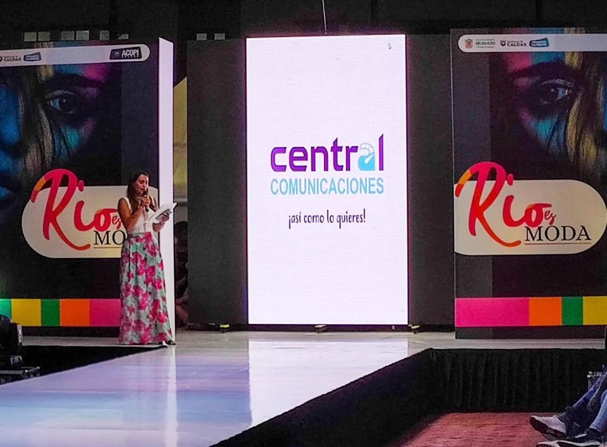
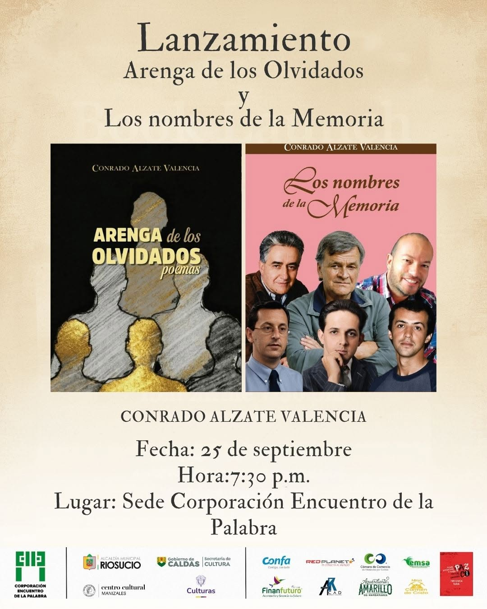
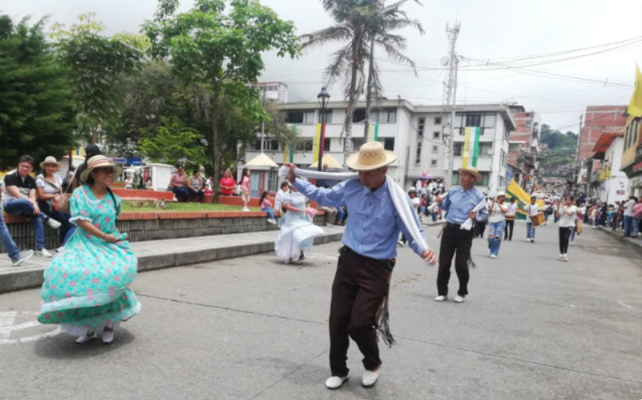

Festividades Anuales
Las celebraciones más importantes que reúnen a la comunidad riosuceña cada año.

Río es Moda
Evento de moda y confección que exhibe el talento textil de Riosucio ante compradores nacionales e internacionales.

Encuentro de la Palabra
Desde 1983, este encuentro reúne poesía, teatro, literatura y música para celebrar la identidad cultural de la provincia.

Cumpleaños de Riosucio
Cada 7 de agosto, el primer municipio republicano de Colombia celebra su fundación con desfiles y noches del Ingrumá.
Aquí irá el mapa interactivo